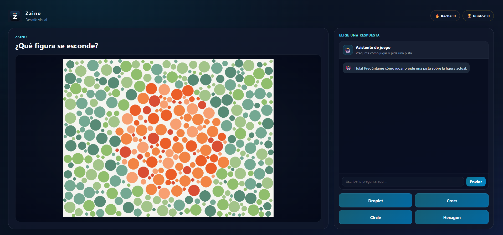

Featured Full-Stack AI Application
Zaino — Visual & Geometry Challenge

Full-stack visual perception and geometry puzzle game. Features server-side score and streak tracking, paired with an integrated RAG-powered AI assistant that provides contextual hints from PDF knowledge bases without leaking answers.
Python
Django REST
LangChain & Groq
Chroma RAG
React
TypeScript
TanStack Query
Production Web App
Fire Glass — Tarot Web Application
Interactive Python web application deployed in production featuring automated Tarot card logic, custom spreads, and dynamic readings.
Python
FastApi
Postgres
SQLAlchemy + Alembic
Docker
Computational Modeling
Systems Simulation & Cellular Automata
Implementation of the Off-Lattice Automaton algorithm for self-propelled particle flocks, based on the seminal paper "Novel Type of Phase Transition in a System of Self-Driven Particles".
Java
Complex Systems
Simulation